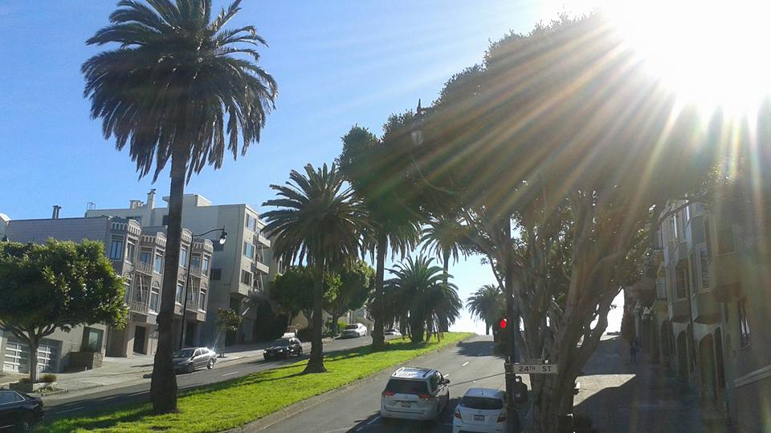

Victor M. Puentes Jr.
"Ignorance, allied with power, is the most ferocious enemy justice can have."
Intro
Hello, and welcome to my blog. You could've gone to one of millions of blogs out there on the internet, but something made you come here, and for that I thank. I will try my hardest to make my entries at the very least insightful if not entertaining. In this blog, I'm going to talk about the things I love, which may include topics like, but not limited to, music,food, and travel. Those are the fun things, but I also have had a life long mission of creating social change and awarness through my music. Not everyone loves the trumpet, so I'm blogging now...there's more than one way to...(insert culturally relevent saying here).

About Me
Born in San Francisco, CA, raised in Seattle, WA, educated in Boston, MA (Berklee '07), refined in Philadelphia, and now back in the musical richness of the PNW, I have always played my horn in musically fertile cities. Starting at the age of 6 on the clarinet and then to trumpet at nine, I've always knew music would be a lifelong journey for me, so I worked on honing my skills and have tried diligently to keep practicing. I would say my hard work at an early age is what earned me a scholarship to Berklee College of Music. Going to school for music changed my concept of music forever! While in school, I immersed myself into the Boston Music scene and studied with some amazing professors that always challenged me musically.Through the years I has also made an effort to study independently and hounded some of my favorite artists to give me music lessons, I had and have no shame in asking people to teach me something. I believe this attitude led me to performance opportunities with world-reknown artists like Gloria Estefan and the Chieftains.
I left my heart in San Francisco...

I won't expect any millenials to get that...lol. I wanted to share some pics from my last trip. I was raised in Bernal Heights but spent alot of time in the Mission District riding around with my pop listening to this guy . Nowadays it's known as the valley of the $8 lattes!!! Time changes everything, right? Well, not everything. Although most people I grew up with would agree that they don't recognize the San Francisco they grew up with, I was pleased to see that my culture is still being represented...well, on the walls of buildings at least.